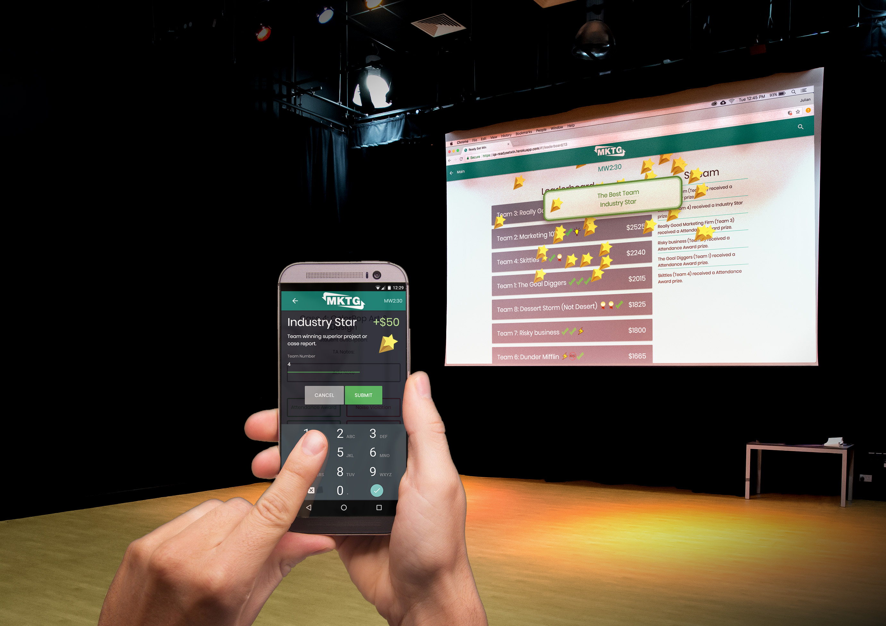

Web Application Development
Need an app? Let's work together to get the design just right. Then, with my network of freelance developers, I will manage its implementation with the latest and greatest technologies.
She has spoken on the TED stage, written books, and consulted for national companies. She also started three successful companies herself. For her day job, she is a professor of marketing at Oklahoma State University.
When Kinda reached out to me, she was working to refactor her Principles of Marketing course around some of the newest trends in the industry. She was interested in ways technology could transform the classroom, and organized a complex lesson plan which brought together local business owners and students to develop hands-on solutions to common marketing challenges.
The app we created serves an essential role in the class. Each assignment has a software component which TAs provide live feedback on. These were some of her goals for the project:
I only had 5 weeks to design and implement the product. There was no time for research, so I worked hard to mentally walk through the use-cases as to maximize efficiency and usability. We did it ahead of schedule and Kinda was very happy with the result.

To encourage students to compete, we made a leaderboard and activity stream where overall scores and the last three rewards of a team were shown. Special attention was paid to the responsiveness of the design. We wanted students to have extremely easy access to the leaderboard to encourage participation and competition.
The live updates were an interesting question. TAs would walk around the class providing live feedback, and it would have to be as fast and simple as humanly possible, since there were at most 250 students to monitor at one time.
We decided that students would wear lanyards with their team number. I thought TAs would notice the action that merits of a reward or punishment first, as these would be more obvious. They could look closer at the number on the lanyard. I coded up a particle system explosion to add the gamified feel we were looking for, and create emotional investment in the game.
This is the back end, where the professor sets up the operation.
The app and the class were a huge success. The class became well known at Oklahoma State. The power users of the application were the TAs, and they commented to Kinda on the ease of use. We are currently working to improve the app, add features, and adopt it into an integrated learning environment.
"I was more than pleased by Julian's work on our app project. He was an excellent communicator throughout the project, mapping out detailed app wireframes and laying out clear programming performance standards. I was especially impressed by Julian's ability to foresee potential fail points in our project and proactively create functionality to failsafe our app and make it more efficient. In other words, he walked through the behavior of our intended user and created solutions to problems before we even experienced them! This is rare to find in any profession: someone who will go above and beyond just the minimum requirements to create excellence. Julian also had the highest work ethic on our project and showed himself trustworthy to complete deadlines. I not only would work with Julian again, but I look forward to hiring him for the next phase of programming for my company."
Kinda Wilson
Instructor, Spears School of Business
Oklahoma State University
Need an app? Let's work together to get the design just right. Then, with my network of freelance developers, I will manage its implementation with the latest and greatest technologies.
Are your conversion rates low, or are people using your app differently than intended? Let me conduct some research on your users, and cook up some designs that will solve the problems.
Want a stylish new way to advertise yourself or your business? My websites will make you stand out. I can easily add content management, for a blog, or Inbound Marketing.